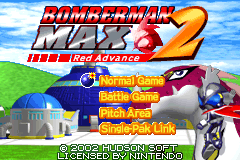

PLAYER 255
HOME
ABOUT
LISTS
Previous
Previous
Bomberman Max 2: Red Advance
Not Complete on 2018-10-28
2 / 5
Release Date:
May 30, 2002
Meta Score:
75
Screenshots

Notes
I don't like Bomberman as a single player game. It's ok in multiplayer but just kind of boring in singleplayer.
Next
Next